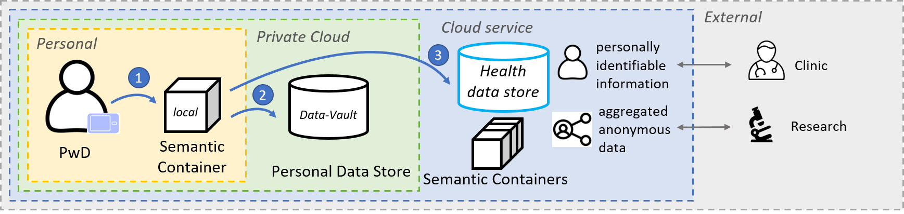

MyPCH (MyPersonalConnectedHealth)
This repository is the result of the NGI funded project, MyPCH. The innovation is an open source solution that empowers persons with diabetes (PwD) by sharing personal data from
a diabetes device in a secure, trusted, auditable, traceable and consensus-based way inspired by MyData principles.

Purpose
The propose of the project is to use Semantic Container standardized framework to exchange health data in a privacy respecting data flow between various stakeholders in use cases:
- Use case 1 - Collection
- - Collect diabetes data from medical devices using a PC with Tidepool software (TP) and store into a Semantic Container (SC).
- Use case 2 - Insigths
- - Get personal insigths to explore and visualise health data in a self-determined way locally or by using a Personal Data Store (PDS) service.
- Use case 3 - Sharing
- - Share data with others by uploading diabetes data to a cloud service with Semantic Containers.
- - Share either personal identifiable information with clinics or aggregated anonymous data with researchers.
- - We explore requirements from real-world use cases in the Danish diabetes ecosystem and introduce a new component, Health Data Store (HDS) service.